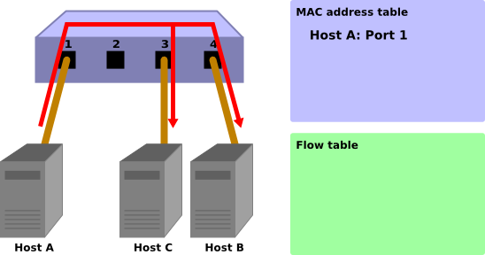
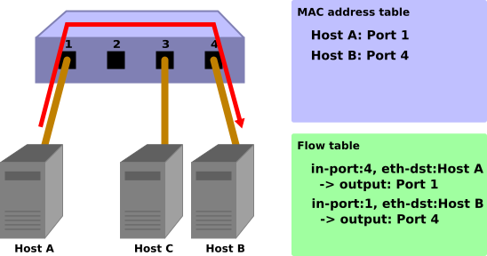

交換器（ Switching Hub ）¶
本章將會用簡單的 Switching hub 安裝做為題材，說明 Ryu 如何安裝一個應用程式。
Switching Hub¶
在交換器中有許許多多的功能。在這邊我們將看到擁有下列簡單功能的交換器。
- 學習連接到連接埠的 host 之 MAC 位址，並記錄在 MAC 位址表當中。
- 對於已經記錄下來的 MAC 位址，若是收到送往該 MAC 位址的封包，則轉送該封包到相對應的連接埠。
- 對於未指定目標位址的封包，則執行 Flooding。
讓我們使用 Ryu 來實現這樣一個交換器吧。
OpenFlow 實作的交換器¶
OpenFlow 交換器會接受來自于 controller 的指令並達到以下功能。
- 對於接收到的封包進行修改或針對指定的連接埠進行轉送。
- 對於接收到的封包進行轉送到 Controller 的動作（ Packet-In ）。
- 對於接收到來自 Controller 的封包轉送到指定的連接埠（ Packet-Out ）。
上述的功能所組合起來的就是一台交換器的實現。
首先，利用 Packet-In 的功能來達到 MAC 位址的學習。 Controller 使用 Packet-In 接收來自交換器的封包之後進行分析，得到連接埠相關資料以及所連接的 host 之 MAC 位址。
在學習之後，對所收到的封包進行轉送。將封包的目的位址，在已經學習的 host 資料中進行檢索，根據檢索的結果會進行下列處理。
- 如果是已經存在記錄中的 host：使用 Packet-Out 功能轉送至先前所對應的連接埠
- 如果是尚未存在記錄中的 host：使用 Packet-Out 功能來達到 Flooding
下面將一步一步的說明並附上圖片以幫助理解。
初始狀態
Flow table 為空白的狀況。
將 host A 接到連接埠 1，host B 接到連接埠 4，host C 接到連接埠 3。

host A → host B
當 host A 向 host B 發送封包。這時後會觸發 Packet-In 訊息。host A 的 MAC 位址會被連接埠 1 給記錄下來。由於 host B 的 MAC 位址尚未被學習，因此會進行 Flooding 並將封包往 host B 和 host C 發送。
Packet-In:
in-port: 1 eth-dst: host B eth-src: host A
Packet-Out:
action: OUTPUT: Flooding
host B → host A
封包從 host B 向 host A 返回時，在 Flow table 中新增一筆 Flow Entry，並將封包轉送到連接埠 1。 因此該封包並不會被 host C 收到。

Packet-In:
in-port: 4 eth-dst: host A eth-src: host B
Packet-Out:
action: OUTPUT: port 1
host A → host B
再一次， host A 向 host B 發送封包，在 Flow table 中新增一個 Flow Entry 接著轉送封包到連接埠4。
Packet-In:
in-port: 1 eth-dst: host B eth-src: host A
Packet-Out:
action: OUTPUT: port 4
接下來，讓我們實際來看一下在 Ryu 當中實作交換器的原始碼。
在 Ryu 上實作交換器¶
Ryu 的原始碼之中有提供交換器的程式原始碼。
ryu/app/simple_switch_13.py
OpenFlow 其他的版本也有相對應的原始碼，例如 simple_switch.py（ OpenFlow 1.0 ）和 simple_switch_12.py（ OpenFlow 1.2 ）。我們現在要來看的則是 OpenFlow 1.3 的版本。
由於原始碼不多，因此我們把全部都拿來檢視。
from ryu.base import app_manager
from ryu.controller import ofp_event
from ryu.controller.handler import CONFIG_DISPATCHER, MAIN_DISPATCHER
from ryu.controller.handler import set_ev_cls
from ryu.ofproto import ofproto_v1_3
from ryu.lib.packet import packet
from ryu.lib.packet import ethernet
class SimpleSwitch13(app_manager.RyuApp):
OFP_VERSIONS = [ofproto_v1_3.OFP_VERSION]
def __init__(self, *args, **kwargs):
super(SimpleSwitch13, self).__init__(*args, **kwargs)
self.mac_to_port = {}
@set_ev_cls(ofp_event.EventOFPSwitchFeatures, CONFIG_DISPATCHER)
def switch_features_handler(self, ev):
datapath = ev.msg.datapath
ofproto = datapath.ofproto
parser = datapath.ofproto_parser
# install table-miss flow entry
#
# We specify NO BUFFER to max_len of the output action due to
# OVS bug. At this moment, if we specify a lesser number, e.g.,
# 128, OVS will send Packet-In with invalid buffer_id and
# truncated packet data. In that case, we cannot output packets
# correctly.
match = parser.OFPMatch()
actions = [parser.OFPActionOutput(ofproto.OFPP_CONTROLLER,
ofproto.OFPCML_NO_BUFFER)]
self.add_flow(datapath, 0, match, actions)
def add_flow(self, datapath, priority, match, actions):
ofproto = datapath.ofproto
parser = datapath.ofproto_parser
inst = [parser.OFPInstructionActions(ofproto.OFPIT_APPLY_ACTIONS,
actions)]
mod = parser.OFPFlowMod(datapath=datapath, priority=priority,
match=match, instructions=inst)
datapath.send_msg(mod)
@set_ev_cls(ofp_event.EventOFPPacketIn, MAIN_DISPATCHER)
def _packet_in_handler(self, ev):
msg = ev.msg
datapath = msg.datapath
ofproto = datapath.ofproto
parser = datapath.ofproto_parser
in_port = msg.match['in_port']
pkt = packet.Packet(msg.data)
eth = pkt.get_protocols(ethernet.ethernet)[0]
dst = eth.dst
src = eth.src
dpid = datapath.id
self.mac_to_port.setdefault(dpid, {})
self.logger.info("packet in %s %s %s %s", dpid, src, dst, in_port)
# learn a mac address to avoid FLOOD next time.
self.mac_to_port[dpid][src] = in_port
if dst in self.mac_to_port[dpid]:
out_port = self.mac_to_port[dpid][dst]
else:
out_port = ofproto.OFPP_FLOOD
actions = [parser.OFPActionOutput(out_port)]
# install a flow to avoid packet_in next time
if out_port != ofproto.OFPP_FLOOD:
match = parser.OFPMatch(in_port=in_port, eth_dst=dst)
self.add_flow(datapath, 1, match, actions)
data = None
if msg.buffer_id == ofproto.OFP_NO_BUFFER:
data = msg.data
out = parser.OFPPacketOut(datapath=datapath, buffer_id=msg.buffer_id,
in_port=in_port, actions=actions, data=data)
datapath.send_msg(out)
那麼我們開始看一下其中的內容吧。
類別的定義和初始化¶
為了要實作 Ryu 應用程式，因此繼承了 ryu.base.app_manager.RyuApp。
接著為了使用 OpenFlow 1.3 ，將 OFP_VERSIONS 指定為 OpenFlow 1.3。
然後，MAC 位址表的 mac_to_port 也已經被定義。
OpenFlow 通訊協定中有些程序像是握手協定（ handshake ），是定義好讓 OpenFlow 交換器和 Controller 之間進行通訊時使用。 但這些細節，對於一個 Ryu 應用程式來說是不用擔心或需要特別處理的。
class SimpleSwitch13(app_manager.RyuApp):
OFP_VERSIONS = [ofproto_v1_3.OFP_VERSION]
def __init__(self, *args, **kwargs):
super(SimpleSwitch13, self).__init__(*args, **kwargs)
self.mac_to_port = {}
# ...
事件管理（ Event handler ）¶
對於 Ryu 來說，接受到任何一個 OpenFlow 訊息即會產生一個相對應的事件。而 Ryu 應用程式則是必須實作事件管理以處理相對應發生的事件。
事件管理（ Event Handler ）是一個擁有事件物件（ Event Object ）做為參數，並且使用``ryu.controller.handler.set_ev_cls`` 修飾（ Decorator ）的函數。
set_ev_cls 則指定事件類別得以接受訊息和交換器狀態作為參數。
事件類別名稱的規則為 ryu.controller.ofp_event.EventOFP + <OpenFlow訊息名稱>，
例如：在 Packet-In 訊息的狀態下的事件名稱為 EventOFPPacketIn 。
詳細的內容請參考 Ryu 的文件 API 參考資料 。
對於狀態來說，請指定下面列表的其中一項。
| 名稱 | 說明 |
|---|---|
| ryu.controller.handler.HANDSHAKE_DISPATCHER | 交換 HELLO 訊息 |
| ryu.controller.handler.CONFIG_DISPATCHER | 接收 SwitchFeatures訊息 |
| ryu.controller.handler.MAIN_DISPATCHER | 一般狀態 |
| ryu.controller.handler.DEAD_DISPATCHER | 連線中斷 |
新增 Table-miss Flow Entry¶
OpenFlow 交換器的握手協議完成之後，新增 Table-miss Flow Entry 到 Flow table 中為接收 Packet-In 訊息做準備。
具體來說，接收到 Switch features（ Features reply ）訊息後就會新增 Table-miss Flow Entry。
@set_ev_cls(ofp_event.EventOFPSwitchFeatures, CONFIG_DISPATCHER)
def switch_features_handler(self, ev):
datapath = ev.msg.datapath
ofproto = datapath.ofproto
parser = datapath.ofproto_parser
# ...
ev.msg 是用來儲存對應事件的 OpenFlow 訊息類別實體。
在這個例子中則是 ryu.ofproto.ofproto_v1_3_parser.OFPSwitchFeatures 。
msg.datapath 這個訊息是用來儲存 OpenFlow 交換器的 ryu.controller.controller.Datapath 類別所對應的實體。
Datapath 類別是用來處理 OpenFlow 交換器重要的訊息，例如執行與交換器的通訊和觸發接收訊息相關的事件。
Ryu 應用程式所使用的主要屬性如下：
| 名稱 | 說明 |
|---|---|
| id | 連接 OpenFlow 交換器的 ID（ datapath ID ）。 |
| ofproto | 表示使用的 OpenFlow 版本所對應的 ofproto module。 目前的狀況會是下述的其中之一。
|
| ofproto_parser | 和 ofproto 一樣，表示 ofproto_parser module。 目前的狀況會是下述的其中之一。
|
Ryu 應用程式中 Datapath 類別的主要方法如下：
send_msg(msg)
發送 OpenFlow 訊息。 msg 是發送 OpenFlow 訊息ryu.ofproto.ofproto_parser.MsgBase類別的子類別。
交換器本身不僅僅使用 Switch features 訊息，還使用事件處理以取得新增 Table-miss Flow Entry 的時間點。
def switch_features_handler(self, ev):
# ...
# install table-miss flow Entry
#
# We specify NO BUFFER to max_len of the output action due to
# OVS bug. At this moment, if we specify a lesser number, e.g.,
# 128, OVS will send Packet-In with invalid buffer_id and
# truncated packet data. In that case, we cannot output packets
# correctly.
match = parser.OFPMatch()
actions = [parser.OFPActionOutput(ofproto.OFPP_CONTROLLER,
ofproto.OFPCML_NO_BUFFER)]
self.add_flow(datapath, 0, match, actions)
Table-miss Flow Entry 的優先權為 0 即最低的優先權，而且此 Entry 可以 match 所有的封包。 這個 Entry 的 Instruction 通常指定為 output action ，並且輸出的連接埠將指向 Controller。 因此當封包沒有 match 任何一個普通 Flow Entry 時，則觸發 Packet-In。
備註
目前（ 2014年1月 ），市面上的 Open vSwitch 對於 OpenFlow 1.3 的支援並不完整， 而且對於 OpenFlow 1.3 以前的版本 Packet-In 是個基本的功能。 包括 Table-miss Flow Entry 也尚未被支援，僅僅是使用一般的 Flow Entry 取代。
空的 match 將被產生為了 match 所有的封包。match 表示於 OFPMatch 類別中。
接下來，為了轉送到 Controller 連接埠， OUTPUT action 類別（ OFPActionOutput ）的實例將會被產生。Controller 會被指定為封包的目的地，OFPCML_NO_BUFFER 會被設定為 max_len 以便接下來的封包傳送。
備註
送往 Controller 的封包可以僅只傳送 header 部分（ Ethernet header ），剩下的則存在緩衝區間中以增加效率。 但目前（ 2014年1月 ）Open vSwitch 存在臭蟲的關係，會將所有的封包都傳送，並不會只傳送 header。
最後將優先權設定為 0（ 最低優先權 ），然後執行 add_flow() 方法以發送 Flow Mod 訊息。
add_flow() 方法的內容將會在稍後進行說明。
Packet-in 訊息¶
為了接收處理未知目的地的封包，需要 Packet-In 事件管理。
@set_ev_cls(ofp_event.EventOFPPacketIn, MAIN_DISPATCHER)
def _packet_in_handler(self, ev):
msg = ev.msg
datapath = msg.datapath
ofproto = datapath.ofproto
parser = datapath.ofproto_parser
# ...
OFPPacketIn 類別經常使用的屬性如下列所示。
| 名稱 | 說明 |
|---|---|
| match | ryu.ofproto.ofproto_v1_3_parser.OFPMatch 類別的實體，用來儲存接收封包的 Meta 資訊。 |
| data | 接收封包本身的 binary 資料 |
| total_len | 接收封包的資料長度 |
| buffer_id | 接收封包的內容若是存在 OpenFlow 交換器上時所指定的ID
如果在沒有 buffer 的狀況下，則設定 ryu.ofproto.ofproto_v1_3.OFP_NO_BUFFER |
更新 MAC 位址表¶
def _packet_in_handler(self, ev):
# ...
in_port = msg.match['in_port']
pkt = packet.Packet(msg.data)
eth = pkt.get_protocols(ethernet.ethernet)[0]
dst = eth.dst
src = eth.src
dpid = datapath.id
self.mac_to_port.setdefault(dpid, {})
self.logger.info("packet in %s %s %s %s", dpid, src, dst, in_port)
# learn a mac address to avoid FLOOD next time.
self.mac_to_port[dpid][src] = in_port
# ...
從 OFPPacketIn 類別的 match 得到接收埠（ in_port ）的資訊。
目的 MAC 位址和來源 MAC 位址使用 Ryu 的封包函式庫，從接收到封包的 Ethernet header 取得。
藉由得知目的 MAC 位址和來源 Mac 位址，更新 MAC 位址表。
為了可以對應連接到多個 OpenFlow 交換器，MAC 位址表和每一個交換器之間的識別，就使用 datapath ID 來進行確認。
判斷轉送封包的連接埠¶
目的 MAC 位址若存在于 MAC 位址表，則判斷該連接埠的號碼為輸出。反之若不存在于 MAC 位址表則 OUTPUT action 類別的實體並生成 flooding（ OFPP_FLOOD ）給目的連接埠使用。
def _packet_in_handler(self, ev):
# ...
if dst in self.mac_to_port[dpid]:
out_port = self.mac_to_port[dpid][dst]
else:
out_port = ofproto.OFPP_FLOOD
actions = [parser.OFPActionOutput(out_port)]
# install a flow to avoid packet_in next time
if out_port != ofproto.OFPP_FLOOD:
match = parser.OFPMatch(in_port=in_port, eth_dst=dst)
self.add_flow(datapath, 1, match, actions)
# ...
若是找到了目的 MAC 位址，則在交換器的 Flow table 中新增。
Table-miss Flow Entry 包含 match 和 action，並透過 add_flow() 來新增。
不同於平常的 Table-miss Flow Entry ，這次將加上設定 match 條件。 本次交換器實作中，接收埠（ in_port ）和目的 MAC 位址（ eth_dst ）已指定。例如，接收到來自連接埠 1 的封包就傳送到 host B。
在這邊指定 Flow Entry 優先權為 1，而優先權的值越大，表示有更高的優先權。因此，這邊新增的 Flow Entry 將會先於 Table-miss Flow Entry 而被執行。
上述的內容包含 action 整理如下，這些 Entry 會被新增至 Flow Entry：
連接埠 1 接收到的封包，若是要轉送至 host B（ 目的 MAC 位址 B) 的封包則轉送至連接埠 4。
提示
在 OpenFlow 中，有個邏輯連接埠叫做 NORMAL 並在規範中被列為選項（ 也就是說可以不進行實作 ）。當被指定的連接埠為 NORMAL 時，傳統 L2/L3 的功能將會被啟用來處理封包。 意思是當把所有輸出的埠均設定為 NORMAL 時，交換器將會視作一個普通的交換器而存在。跟一般交換器的差別在於我們是使用 OpenFlow 來達到這樣的功能。
新增 Flow Entry 的處理¶
Packet-In handler 的處理尚未說明，在這之前我們先來看一看新增 Flow Entry 的方法。
def add_flow(self, datapath, priority, match, actions):
ofproto = datapath.ofproto
parser = datapath.ofproto_parser
inst = [parser.OFPInstructionActions(ofproto.OFPIT_APPLY_ACTIONS,
actions)]
# ...
對於 Flow Entry 來說，設定 match 條件以分辨目標封包、設定 instruction 以處理封包以及 Entry 的優先權和有效時間。
對於交換器的的實作，Apply Actions 是用來設定那些必須立即執行的 action 所使用。
最後透過 Flow Mod 訊息將 Flow Entry 新增到 Flow table 中。
def add_flow(self, datapath, port, dst, actions):
# ...
mod = parser.OFPFlowMod(datapath=datapath, priority=priority,
match=match, instructions=inst)
datapath.send_msg(mod)
Flow Mod 訊息的類別為 OFPFlowMod 。使用 OFPFlowMod 所產生的實體透過 Datapath.send_msg() 方法來發送訊息給 OpenFlow 交換器。
OFPFlowMod 類別的建構子參數相當的多，但是在大多數的情況下都有其預設值，原始碼中括號內的部分即是預設值。
datapath
OpenFlow 交換器以及 Flow table 的操作都是透過 Datapath 類別的實體來進行。 在一般的情況下，會由事件傳遞給事件管理的訊息中取得，例如：Packet-In 訊息。
cookie (0)
Controller 所設定儲存的資料，在 Entry 的更新或者刪除的時所需要使用的資料都會放在這邊，當做過濾器使用，而且不可以作為封包處理的參數。
cookie_mask (0)
Entry 的更新或刪除時，若是該值為非零，則做為指定 Entry 的 cookie 使用。
table_id (0)
指定 Flow Entry 的 Table ID 。
command (ofproto_v1_3.OFPFC_ADD)
指定要執行何項操作。
名稱 說明 OFPFC_ADD Flow Entry 新增 OFPFC_MODIFY Flow Entry 更新 OFPFC_MODIFY_STRICT 嚴格的 Flow Entry 更新 OFPFC_DELETE Flow Entry 刪除 OFPFC_DELETE_STRICT 嚴格的 Flow Entry 刪除
idle_timeout (0)
Flow Entry 的有效期限，以秒為單位。Flow Entry 如果未被參照而且超過了指定的時間之後， 該 Flow Entry 將會被刪除。如果 Flow Entry 有被參照，則超過時間之後會重新歸零計算。
在 Flow Entry 被刪除之後就會發出 Flow Removed 訊息通知 Controller 。
hard_timeout (0)
Flow Entry 的有效期限，以秒為單位。跟 idle_timeout 不同的地方是， hard_timeout 在超過時限後並不會重新歸零計算。 也就是說跟 Flow Entry 與有沒有被參照無關，只要超過指定的時間就會被刪除。
跟 idle_timeout 一樣，當 Flow Entry 被刪除時，Flow Removed 訊息將會被發送來通知 Controller。
priority (0)
Flow Entry 的優先權。數值越大表示權限越高。
buffer_id (ofproto_v1_3.OFP_NO_BUFFER)
指定 OpenFlow 交換器上用來儲存封包的緩衝區 ID。 緩衝區 ID 會放在通知 Controller 的 Packet-In 訊息中，並且和接下來的 OFPP_TABLE 所指定的輸出埠和 Flow Mod 訊息處理時可以被參照。 當發送的命令訊息為 OFPFC_DELETE 或 OFPFC_DELETE_STRICT 時，會忽略本數值。
如果不指定緩衝區 ID 的時候，必須使用
OFP_NO_BUFFER作為其設定值。
out_port (0)
OFPFC_DELETE 和 OFPFC_DELETE_STRICT 命令用來指定輸出埠的參數。 命令為 OFPFC_ADD、OFPFC_MODIFY、OFPFC_MODIFY_STRICT 時則可以忽略。
若要讓本參數無效則指定輸出埠為
OFPP_ANY。
out_group (0)
跟 out_port 一樣，作為一個輸出埠，但是轉到特定的 group。
若要使其無效，則指定為
OFPG_ANY。
flags (0)
下列的 flags 可以被組合使用。
名稱 說明 OFPFF_SEND_FLOW_REM Flow Entry 被移除的時候，對 Controller 發送 Removed 訊息。 OFPFF_CHECK_OVERLAP 使用 OFPFC_ADD 時，檢查是否有重複的 Flow Entry 存在。 若是有則觸發 Flow Mod 失敗，並返回錯誤訊息。 OFPFF_RESET_COUNTS 重設該 Flow Entry 的 packet counter 和 byte counter。 OFPFF_NO_PKT_COUNTS 關閉該 Flow Entry 的 packet counter 功能。 OFPFF_NO_BYT_COUNTS 關閉該 Flow Entry 的 byte counter 功能。
match (None)
設定 match 。
instructions ([])
設定 instruction 。
轉送封包¶
回到 Packet-In handler 並說明最後的流程。
在 MAC 位址表中找尋目的 MAC 位址，若是有找到則發送 Packet-Out 訊息，並且轉送封包。
def _packet_in_handler(self, ev):
# ...
data = None
if msg.buffer_id == ofproto.OFP_NO_BUFFER:
data = msg.data
out = parser.OFPPacketOut(datapath=datapath, buffer_id=msg.buffer_id,
in_port=in_port, actions=actions, data=data)
datapath.send_msg(out)
Packet-Out 訊息相對應的類別是 OFPPacketOut 。
OFPPacketOut 建構子的參數如下所示。
datapath
指定 OpenFlow 交換器對應的 Datapath 類別實體。
buffer_id
指定 OpenFlow 交換器上封包對應的緩衝區。 如果不想使用緩衝區，則指定為OFP_NO_BUFFER。
in_port
指定接收封包的連接埠號。 如果不想使用的話就指定為OFPP_CONTROLLER。
actions
指定 actions list。
data
設定封包的 binary data 。主要用在 buffer_id 為OFP_NO_BUFFER的情況。 如果使用了 OpenFlow 交換器的緩衝區則可以省略。
交換器的實作時，在 Packet-In 訊息中指定 buffer_id。若是 Packet-In 訊息中 buffer_id 被設定為無效時。Packet-In 的封包必須指定 data 以便傳送。
交換器的原始碼說明就到這邊。 接下來我們將執行交換器以確認相關的動作。
執行 Ryu 應用程式¶
為了執行交換器，OpenFlow 交換器採用 Open vSwitch，執行環境則是在 mininet 上。
由於 Ryu 的 OpenFlow Tutorial VM 映像檔已經準備好了，有了該 VM 映像檔會讓準備工作較為簡單。
VM 映像檔
http://sourceforge.net/projects/ryu/files/vmimages/OpenFlowTutorial/
OpenFlow_Tutorial_Ryu3.2.ova（ 約1.4GB ）
相關文件（ Wiki網頁 ）
文件中的描述和 VM 映像檔有可能使用較舊版本的 Open vSwitch 和 Ryu ，請特別注意。
若是不想使用 VM 映像檔，當然可以自行打造環境。若是您決定自行搭建環境，請參考以下軟體的版本。
- Mininet VM 2.0.0
- http://mininet.org/download/
- Open vSwitch 1.11.0
- http://openvswitch.org/download/
- Ryu 3.2
- https://github.com/osrg/ryu/
$ sudo pip install ryu
但是在這邊我們使用 Ryu 的 OpenFlow Tutorial VM 映像檔。
執行 Mininet¶
因為所需要的終端機 xterm 是從 mininet 中啟動，因此 X windows 的環境是必要的。
為了使用 OpenFlow Tutorial 的 VM，請把 ssh 的 X11 Forwarding 功能打開並進行登入。
$ ssh -X ryu@<VM 的 IP>
使用者名稱為 ryu 、密碼也是 ryu 。
登入以後使用 mn 指令啟動 Mininet 環境。
要建構的是 host 3 台，交換器 1 台的簡單環境。
mn 命令的參數如下：
| 名稱 | 數值 | 說明 |
|---|---|---|
| topo | single,3 | 交換器 1 台、host 3 台的拓璞 |
| mac | 無 | 自動設定 host 的 MAC 位址 |
| switch | ovsk | 使用 Open vSwitch |
| controller | remote | 指定外部的 OpenFlow Controller |
| x | 無 | 啟動 xterm |
執行的方法如下：
$ sudo mn --topo single,3 --mac --switch ovsk --controller remote -x
*** Creating network
*** Adding controller
Unable to contact the remote controller at 127.0.0.1:6633
*** Adding hosts:
h1 h2 h3
*** Adding switches:
s1
*** Adding links:
(h1, s1) (h2, s1) (h3, s1)
*** Configuring hosts
h1 h2 h3
*** Running terms on localhost:10.0
*** Starting controller
*** Starting 1 switches
s1
*** Starting CLI:
mininet>
執行之後，會在 x windows 出現 5 個 xterm 視窗。 分別對應到 host 1 ~ 3 ，交換器和 Controller 。
在交換器的 xterm 視窗中設定 OpenFlow 的版本，視窗的標題為 「switch: s1 (root)」。
首先查看 Open vSwitch 的狀態。
switch: s1:
root@ryu-vm:~# ovs-vsctl show
fdec0957-12b6-4417-9d02-847654e9cc1f
Bridge "s1"
Controller "ptcp:6634"
Controller "tcp:127.0.0.1:6633"
fail_mode: secure
Port "s1-eth3"
Interface "s1-eth3"
Port "s1-eth2"
Interface "s1-eth2"
Port "s1-eth1"
Interface "s1-eth1"
Port "s1"
Interface "s1"
type: internal
ovs_version: "1.11.0"
root@ryu-vm:~# ovs-dpctl show
system@ovs-system:
lookups: hit:14 missed:14 lost:0
flows: 0
port 0: ovs-system (internal)
port 1: s1 (internal)
port 2: s1-eth1
port 3: s1-eth2
port 4: s1-eth3
root@ryu-vm:~#
交換器（ 橋接器 ） s1 被建立，並且增加 3 個連接埠分別連線到 3 個 host。
接下來設定 OpenFlow 的版本為 1.3。
switch: s1:
root@ryu-vm:~# ovs-vsctl set Bridge s1 protocols=OpenFlow13
root@ryu-vm:~#
檢查空白的 Flow table。
switch: s1:
root@ryu-vm:~# ovs-ofctl -O OpenFlow13 dump-flows s1
OFPST_FLOW reply (OF1.3) (xid=0x2):
root@ryu-vm:~#
ovs-ofctl 命令選項是用來指定 OpenFlow 版本。預設值是 OpenFlow10 。
執行交換器¶
準備工作到此已經結束，接下來開始執行 Ryu 應用程式。
在視窗標題為 「controller: c0 (root)」 的 xterm 執行下列指令。
controller: c0:
root@ryu-vm:~# ryu-manager --verbose ryu.app.simple_switch_13
loading app ryu.app.simple_switch_13
loading app ryu.controller.ofp_handler
instantiating app ryu.app.simple_switch_13
instantiating app ryu.controller.ofp_handler
BRICK SimpleSwitch13
CONSUMES EventOFPSwitchFeatures
CONSUMES EventOFPPacketIn
BRICK ofp_event
PROVIDES EventOFPSwitchFeatures TO {'SimpleSwitch13': set(['config'])}
PROVIDES EventOFPPacketIn TO {'SimpleSwitch13': set(['main'])}
CONSUMES EventOFPErrorMsg
CONSUMES EventOFPHello
CONSUMES EventOFPEchoRequest
CONSUMES EventOFPPortDescStatsReply
CONSUMES EventOFPSwitchFeatures
connected socket:<eventlet.greenio.GreenSocket object at 0x2e2c050> address:('127.0.0.1', 53937)
hello ev <ryu.controller.ofp_event.EventOFPHello object at 0x2e2a550>
move onto config mode
EVENT ofp_event->SimpleSwitch13 EventOFPSwitchFeatures
switch features ev version: 0x4 msg_type 0x6 xid 0xff9ad15b OFPSwitchFeatures(auxiliary_id=0,capabilities=71,datapath_id=1,n_buffers=256,n_tables=254)
move onto main mode
正在進行 OVS 的連接動作，這需要花一點時間。
connected socket:<....
hello ev ...
...
move onto main mode
完成之後就會顯示上述的訊息。
現在OVS已經連接，handshake 已經執行完畢，Table-miss Flow Entry 已經加入，正處於等待 Packet-In 的狀態。
確認 Table-miss Flow Entry 已經被加入。
switch: s1:
root@ryu-vm:~# ovs-ofctl -O openflow13 dump-flows s1
OFPST_FLOW reply (OF1.3) (xid=0x2):
cookie=0x0, duration=105.975s, table=0, n_packets=0, n_bytes=0, priority=0 actions=CONTROLLER:65535
root@ryu-vm:~#
優先權為 0，沒有 matcth，action 為 CONTROLLER，重送的資料大小為 65535 (0xffff = OFPCML_NO_BUFFER ）。
確認操作¶
從 host 1 向 host 2 發送 ping。
ARP request
此時 host 1 並不知道 host 2 的 MAC 位址，原則上 ICMP echo request 之前的 ARP request 是用 廣播的方式發送。這樣的廣播方式會讓 host 2 和 host 3 都同樣接受到訊息。
ARP reply
host 2 使用 ARP reply 回覆 host 1 要求。
ICMP echo request
現在 host 1 知道了 host 2 的 MAC 位址，因此發送 echo request 給 host 2。
ICMP echo reply
host 2 此時也知道了 host 1 的 MAC 位址，因此發送 echo reply 給 host 1。
原則上動作流程應該如同描述一般。
在 ping 命令執行之前，為了確認每一台 host 都可以收到，執行 tcpdump 以確認封包有確實被接收。
host: h1:
root@ryu-vm:~# tcpdump -en -i h1-eth0
tcpdump: verbose output suppressed, use -v or -vv for full protocol decode
listening on h1-eth0, link-type EN10MB (Ethernet), capture size 65535 bytes
host: h2:
root@ryu-vm:~# tcpdump -en -i h2-eth0
tcpdump: verbose output suppressed, use -v or -vv for full protocol decode
listening on h2-eth0, link-type EN10MB (Ethernet), capture size 65535 bytes
host: h3:
root@ryu-vm:~# tcpdump -en -i h3-eth0
tcpdump: verbose output suppressed, use -v or -vv for full protocol decode
listening on h3-eth0, link-type EN10MB (Ethernet), capture size 65535 bytes
然後，在終端機執行 mn 命令，並從 host 1 發送 ping 到 host 2。
mininet> h1 ping -c1 h2
PING 10.0.0.2 (10.0.0.2) 56(84) bytes of data.
64 bytes from 10.0.0.2: icmp_req=1 ttl=64 time=97.5 ms
--- 10.0.0.2 ping statistics ---
1 packets transmitted, 1 received, 0% packet loss, time 0ms
rtt min/avg/max/mdev = 97.594/97.594/97.594/0.000 ms
mininet>
ICMP echo reply 正常的被回覆。
繼續下去之前先確認 Flow table。
switch: s1:
root@ryu-vm:~# ovs-ofctl -O openflow13 dump-flows s1
OFPST_FLOW reply (OF1.3) (xid=0x2):
cookie=0x0, duration=417.838s, table=0, n_packets=3, n_bytes=182, priority=0 actions=CONTROLLER:65535
cookie=0x0, duration=48.444s, table=0, n_packets=2, n_bytes=140, priority=1,in_port=2,dl_dst=00:00:00:00:00:01 actions=output:1
cookie=0x0, duration=48.402s, table=0, n_packets=1, n_bytes=42, priority=1,in_port=1,dl_dst=00:00:00:00:00:02 actions=output:2
root@ryu-vm:~#
Table-miss Flow Entry 以外，另外加入兩個優先權為 1 的 Flow Entry。
- 接收埠（ in_port ）:2, 目的 MAC 位址（ dl_dst ）:host 1 → actions:host 1 轉送
- 接收埠（ in_port ）:1, 目的 MAC 位址（ dl_dst ）:host 2 → actions:host 2 轉送
(1) 的 Flow Entry 會被 match 2 次（ n_packets ）、(2) 的 Flow Entry 則被 match 1 次。 因為 (1) 用來讓 host 2 向 host 1 傳送封包用，ARP reply 和 ICMP echo reply 都會發生 match。 (2) 是用來從 host 1 向 host 2 發送訊息，由於 ARP request 是採用廣播的方式，原則上透過 ICMP echo request 完成。
然後檢查一下 simple_switch_13 log 的輸出。
controller: c0:
EVENT ofp_event->SimpleSwitch13 EventOFPPacketIn
packet in 1 00:00:00:00:00:01 ff:ff:ff:ff:ff:ff 1
EVENT ofp_event->SimpleSwitch13 EventOFPPacketIn
packet in 1 00:00:00:00:00:02 00:00:00:00:00:01 2
EVENT ofp_event->SimpleSwitch13 EventOFPPacketIn
packet in 1 00:00:00:00:00:01 00:00:00:00:00:02 1
第一個 Packet-In 是由 host 1 發送的 ARP request ，因為透過廣播的方式所以沒有 Flow Entry 存在，故發送 Packet-Out 。
第二個是從 host 2 回覆的 ARP reply，目的 MAC 位址為 host 1 因此前述的 Flow Entry (1) 被新增。
第三個是從 host 1 向 host 2 發送的 ICMP echo request，因此新增 Flow Entry (2)。
host 2 向 host 1 回覆的 ICMP echo reply 則會和 Flow Entry (1) 發生 match，故直接轉送封包至 host 1 而不需要發送 Packet-In。
最後讓我們看看每一個 host 上的 tcpdump 所呈現的結果。
host: h1:
root@ryu-vm:~# tcpdump -en -i h1-eth0
tcpdump: verbose output suppressed, use -v or -vv for full protocol decode
listening on h1-eth0, link-type EN10MB (Ethernet), capture size 65535 bytes
20:38:04.625473 00:00:00:00:00:01 > ff:ff:ff:ff:ff:ff, ethertype ARP (0x0806), length 42: Request who-has 10.0.0.2 tell 10.0.0.1, length 28
20:38:04.678698 00:00:00:00:00:02 > 00:00:00:00:00:01, ethertype ARP (0x0806), length 42: Reply 10.0.0.2 is-at 00:00:00:00:00:02, length 28
20:38:04.678731 00:00:00:00:00:01 > 00:00:00:00:00:02, ethertype IPv4 (0x0800), length 98: 10.0.0.1 > 10.0.0.2: ICMP echo request, id 3940, seq 1, length 64
20:38:04.722973 00:00:00:00:00:02 > 00:00:00:00:00:01, ethertype IPv4 (0x0800), length 98: 10.0.0.2 > 10.0.0.1: ICMP echo reply, id 3940, seq 1, length 64
host 1 首先發送廣播 ARP request 封包，接著接收到 host 2 送來的 ARP reply 回覆。 接著 host 1 發送 ICMP echo request，host 2 則回覆 ICMP echo reply 。
host: h2:
root@ryu-vm:~# tcpdump -en -i h2-eth0
tcpdump: verbose output suppressed, use -v or -vv for full protocol decode
listening on h2-eth0, link-type EN10MB (Ethernet), capture size 65535 bytes
20:38:04.637987 00:00:00:00:00:01 > ff:ff:ff:ff:ff:ff, ethertype ARP (0x0806), length 42: Request who-has 10.0.0.2 tell 10.0.0.1, length 28
20:38:04.638059 00:00:00:00:00:02 > 00:00:00:00:00:01, ethertype ARP (0x0806), length 42: Reply 10.0.0.2 is-at 00:00:00:00:00:02, length 28
20:38:04.722601 00:00:00:00:00:01 > 00:00:00:00:00:02, ethertype IPv4 (0x0800), length 98: 10.0.0.1 > 10.0.0.2: ICMP echo request, id 3940, seq 1, length 64
20:38:04.722747 00:00:00:00:00:02 > 00:00:00:00:00:01, ethertype IPv4 (0x0800), length 98: 10.0.0.2 > 10.0.0.1: ICMP echo reply, id 3940, seq 1, length 64
對於 host 2 則是接收 host 1 發送的 ARP request 封包，接著對 host 1 發送 ARP reply 回覆。 然後接收到 host 1 來的 ICMP echo request ，回覆 host 1 echo reply。
host: h3:
root@ryu-vm:~# tcpdump -en -i h3-eth0
tcpdump: verbose output suppressed, use -v or -vv for full protocol decode
listening on h3-eth0, link-type EN10MB (Ethernet), capture size 65535 bytes
20:38:04.637954 00:00:00:00:00:01 > ff:ff:ff:ff:ff:ff, ethertype ARP (0x0806), length 42: Request who-has 10.0.0.2 tell 10.0.0.1, length 28
對 host 3 而言，僅有一開始接收到 host 1 的廣播 ARP request ，未做其他動作。
本章總結¶
本章以簡單的交換器安裝為題，透過 Ryu 應用程式的基本安裝步驟和 OpenFlow 交換器的簡單操作方法進行說明。